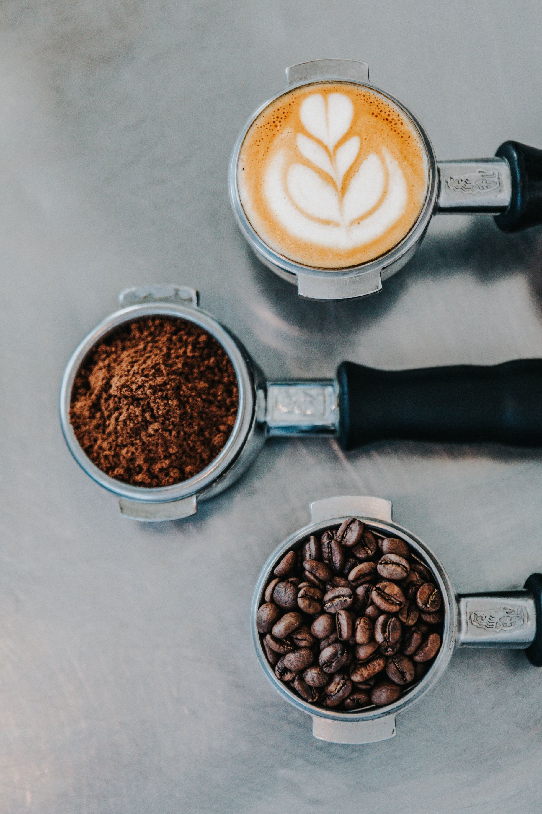

Coffee has been around for a long time and blamed for many ills — from stunting your growth to causing
heart
disease — but newer research shows that it may actually have health benefits.
Recent studies have generally found no connection between coffee and an increased risk of heart disease
or
cancer.
In fact, some studies have found an association between coffee consumption and decreased
overall mortality and
possibly cardiovascular mortality, although this may not be true in younger people who drink large
amounts
of
coffee.

Why the apparent reversal in the thinking about coffee? Earlier studies didn't always take into
account that
known high-risk behaviors, such as smoking and physical inactivity, tended to be more common among
heavy
coffee
drinkers.
Studies have shown that coffee may have health benefits, including protecting against Parkinson's
disease,
type
2 diabetes and liver disease, including liver cancer. Coffee also appears to improve cognitive
function and
decrease the risk of depression.
However, the research appears to bear out some risks. High consumption of unfiltered coffee (boiled
or
espresso)
has been associated with mild elevations in cholesterol levels.
In addition, some studies found that two or more cups of coffee a day can increase the risk of heart
disease
in
people with a specific — and fairly common — genetic mutation that slows the breakdown of caffeine
in the
body.
So, how quickly you metabolize coffee may affect your health risk.
Although coffee may
have fewer risks compared with benefits, keep in mind that
other
beverages, such as milk and
some fruit juices, contain nutrients that coffee doesn't. Also, adding cream and sugar to your
coffee adds fat
and calories — up to hundreds of calories in some cases.
Hensrud, D. (2019). The surprising health benefits of coffee. [online] Mayo Clinic. Available at: https://www.mayoclinic.org/healthy-lifestyle/nutrition-and-healthy-eating/expert-answers/coffee-and-health/faq-20058339 [Accessed 7 Oct. 2019].